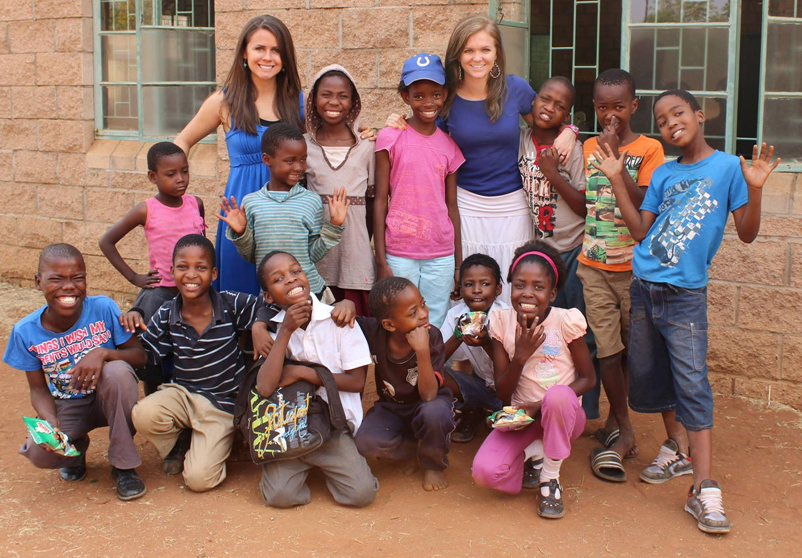
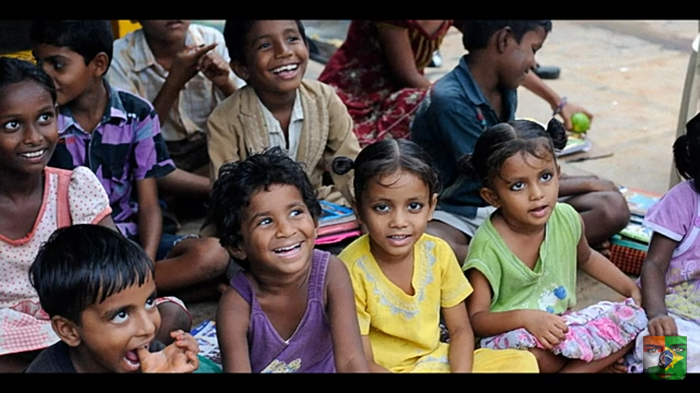
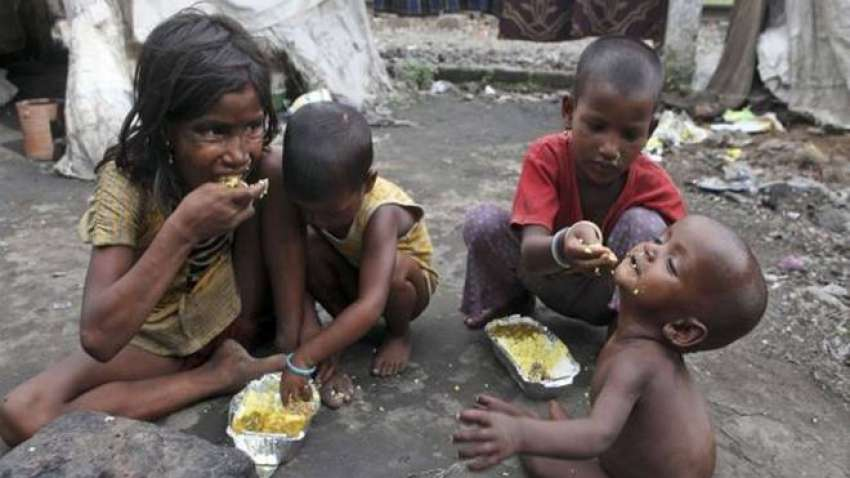

Become a volunteer
You can do something for the helpless children. If you came to help them,They
will get a happy life.
Giving is Virtue.
Create an online fundraising campaign for your next special event or in memory of someone you love to celebrate the Children of Akshaya Patra!



Love
When you sponsor a child, you create a powerful multiplier effect. You help them see beyond the daily struggles of life in poverty.
Compassion
Your support releases them from a cycle of short-term decisions and helps them gain the ability to begin contributing to their own families and communities.
Charity
Donating to the causes you care about not only benefits the charities themselves, it can be deeply rewarding for you too.
Our Gallery
A charitable person loves his fellow-beings and likes to help them in distress.He is very sensitive to the feelings of others.
Our Philantrophist
Charity is the voluntary giving of money, time, or other resources that one has. For various reasons, people consider being charitable towards others in need.

JOHN SMITH“Charity is an act of kindness where a person who has more than enough of what he or she needs contributes a part of his or her surplus income for the fulfilment of the needs of those who are less capable.”

ROBERT“Charity is not showing off. It means that you should help the people in need from the bottom of your heart. If your servant is in serious need of money or any other material goods, help him first; because there are many people.”
MICHAEL“A charity free from any selfish motives is charity in true sense of the term. You will find many people who are supporting charitable causes but very few among them give charity in true sense of the term.”
Our Projects. Support Us
“Charity means helping the hapless, the needy and the infirm in whatever way I can.”
Water Project In Kenya
Charity is the act of giving help to those in need of it. It is a humanitarian act.
Shelter Giving
It is a humanitarian act. It involves giving money, goods or time and effort to those who need it.
Shelter Giving
It is done without expecting something in return. Giving money or food to poor people is an example of charity.
Water Project In Kenya
Most charities are concerned with providing basic needs, such as food, water, clothing, health care and shelter.
Water Project In Kenya
Others may rely on support from charitable organisations. These organisations collect money
Midical Mission
He most common form of charity is donating money. The money is then used to buy these basic needs